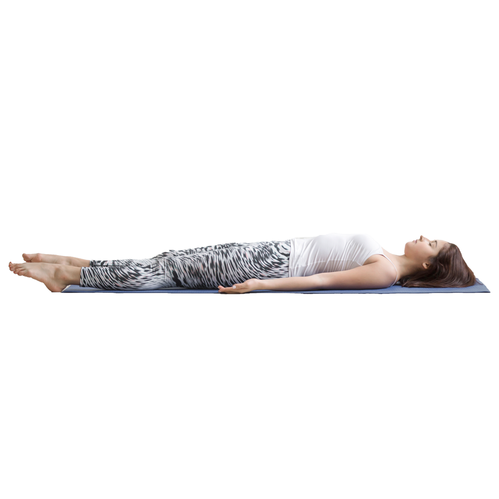

Corpse – Savasana

The Corpse yoga pose is one of the most important postures. It is meant to rejuvenate your mind and body after practice while also allowing you to shift your attention to your inner-self. The benefits: lowering your blood pressure, calming you and giving your body the opportunity to obsorb all of the benefits you worked out for.